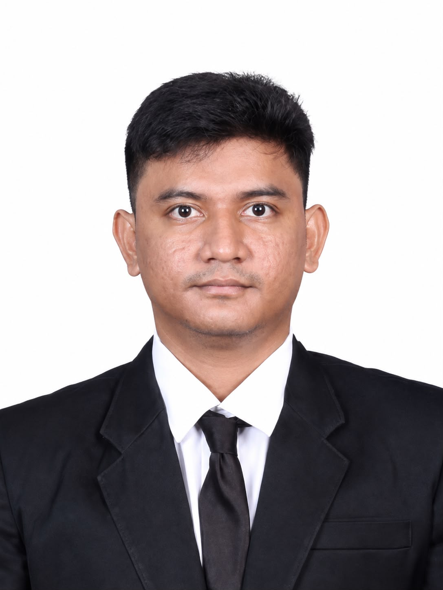

CIVIL ENGINEERING • PROJECT CONTROL • QUALITY
Syahwal
Despriadi
Asisten Civil Engineering
Civil Engineering professional dengan 3 tahun pengalaman di PT. Sampoerna Agro Tbk., berfokus pada quality control, quantity surveying, drafting, quality assurance, dan civil inspection.

3Tahun Pengalaman
03Selected Projects
01Professional Certification
100%Capex Building & Infrastructure Terealisasi Tanpa Addendum Waktu
01 / ABOUT ME
Engineering dengan fokus pada quality & delivery.
Saya adalah Sarjana Teknik dengan pengalaman sebagai Asisten Civil Engineering di PT. Sampoerna Agro Tbk. Saya terbiasa mendukung pekerjaan building dan infrastructure melalui pengendalian kualitas, pemeriksaan kuantitas, inspeksi lapangan, drafting, serta monitoring progres pekerjaan.
Pendekatan kerja saya mengutamakan ketelitian teknis, koordinasi lapangan, dokumentasi yang baik, dan pencapaian target proyek.
02 / CORE COMPETENCIES
Keahlian Profesional
AutoCADSketchUpSAP 2000Microsoft Office
03 / SELECTED PROJECTS
Project Portfolio
01
BUILDING
Gedung SPU Surya Adi
Pengalaman civil engineering dengan fokus pada pengendalian pekerjaan, quality control, quantity checking, dan monitoring progres.
02
INFRASTRUCTURE
Gudang Pupuk
Pengendalian kualitas, kuantitas, gambar teknis, dokumentasi, dan monitoring pekerjaan sipil.
03
CIVIL WORK
Menara Api
Inspection, quality control, quantity checking, koordinasi, dan dokumentasi teknis pekerjaan.
04 / KEY ACHIEVEMENT
On time.
Controlled. Delivered.
100%
Seluruh Capex Building & Infrastructure terealisasi tanpa addendum waktu (keterlambatan).
Pencapaian ini mencerminkan perhatian terhadap pengendalian pelaksanaan, monitoring progres, koordinasi pekerjaan, kualitas, dan target penyelesaian proyek.
05 / EDUCATION & CERTIFICATION
Professional Foundation
Sarjana TeknikAcademic Background
Ahli Muda Teknik Bangunan GedungProfessional Certification
Bahasa Indonesia & EnglishCommunication
06 / CONTACT
Let’s build something
great together.
Terbuka untuk kesempatan profesional di bidang Civil Engineering, Project Control, dan Construction.
Email Me